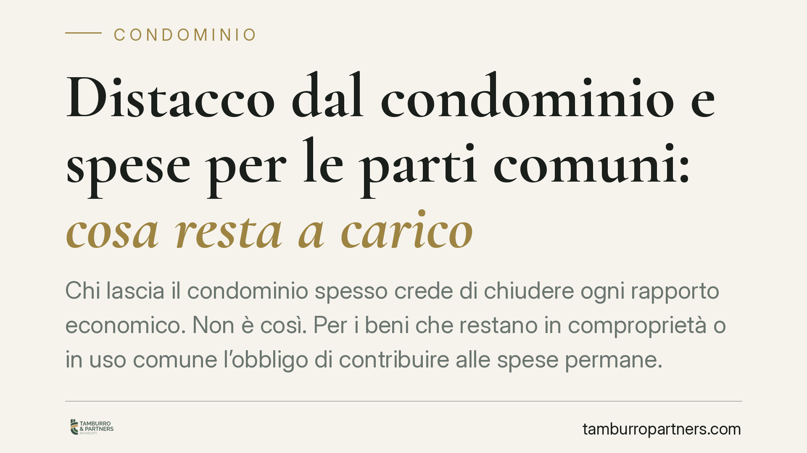

Distacco dal condominio e spese per le parti comuni: cosa resta a carico
Chi lascia il condominio spesso crede di chiudere ogni rapporto economico. Non è così. Per i beni che restano in comproprietà o in uso comune l'obbligo di contribuire alle spese permane. Distinguere il distacco dall'impianto dalla separazione del condominio è decisivo: le norme e le conseguenze sono diverse. Vediamo cosa cambia per chi possiede una villetta in un complesso.

Il nodo: due istituti diversi che spesso si confondono
Nel linguaggio comune si parla genericamente di "distacco dal condominio". In realtà il codice civile disciplina due situazioni distinte, che producono effetti differenti.
Il primo caso è il distacco dall'impianto centralizzato di riscaldamento o condizionamento, regolato dall'art. 1118, comma 4, c.c. Il singolo condòmino può rinunciare all'uso dell'impianto comune, ma solo se dal distacco non derivano notevoli squilibri di funzionamento o aggravi di spesa per gli altri. Anche in questo caso resta obbligato a partecipare alle spese di manutenzione straordinaria dell'impianto e a quelle per la sua conservazione e messa a norma.
Il secondo caso è la separazione (o scioglimento) del condominio, disciplinata dagli artt. 61 e 62 delle disposizioni di attuazione del codice civile. Qui una parte dell'edificio o del complesso si costituisce in condominio autonomo. Ma la separazione è possibile solo se le parti si prestano a una divisione senza modificare le condizioni di uso dei beni che restano comuni a tutti.
Inquadramento normativo
Il punto di partenza è l'art. 1117 c.c., che individua le parti comuni dell'edificio: suolo, fondazioni, muri maestri, tetti, cortili, impianti e servizi di uso comune. La comproprietà su questi beni nasce dal rapporto di accessorietà con le unità immobiliari e non si estingue per effetto di un semplice distacco formale.
Quando un complesso è composto da più fabbricati o villette con beni serventi condivisi (strade interne, aree verdi, impianti, accessi), si configura un supercondominio: una struttura in cui ogni proprietario è titolare pro quota dei beni comuni a tutti gli edifici. La giurisprudenza di legittimità è costante nel ritenere che l'uscita formale dal singolo condominio non recida il legame con i beni rimasti in comunione nel supercondominio.
Il riparto delle spese segue l'art. 1123 c.c. Il comma 1 fissa il criterio proporzionale ai millesimi di proprietà. Il comma 2 prevede che, quando un bene serve i condòmini in misura diversa, la spesa si ripartisce in proporzione all'uso. Il comma 3 stabilisce che, se un bene è destinato a servire solo una parte dell'edificio, le relative spese gravano solo su chi ne trae utilità. È qui che si colloca la risposta operativa: l'obbligo contributivo persiste solo per i beni effettivamente rimasti in comproprietà o in uso.
Cosa cambia per il proprietario di villetta
Chi acquista una villetta in un complesso, o decide di separarsi dal condominio originario, deve mettere in conto una distinzione pratica:
- per i beni esclusivi (la villetta e le sue pertinenze) non c'è alcun obbligo verso gli altri;
- per i beni rimasti in comproprietà o in uso comune (strade, impianti, aree) l'obbligo di contribuire resta pieno, nei limiti dell'utilità effettiva.
La separazione, quindi, non è una via per azzerare i costi comuni. Produce effetti solo sui beni che possono essere materialmente e giuridicamente divisi. Su tutto il resto, il proprietario continua a rispondere pro quota.
Sul piano del recupero crediti, questo ha una ricaduta diretta. L'amministratore del supercondominio può agire anche contro chi si ritiene "uscito": il titolo per richiedere i contributi non viene meno finché sussiste la comproprietà sui beni serventi. Contestare l'obbligo senza una separazione giuridicamente perfezionata espone al rischio di decreto ingiuntivo e aggravio di spese legali.
Cosa fare in concreto
- Verifica il regolamento e le tabelle millesimali: controlla quali beni sono comuni, a chi servono e con quali quote, prima di assumere qualsiasi posizione.
- Distingui il tipo di distacco: se vuoi staccarti solo da un impianto, inquadra l'operazione nell'art. 1118, comma 4, c.c.; se punti alla separazione del condominio, muoviti sugli artt. 61-62 disp. att. c.c.
- Non sospendere unilateralmente i pagamenti: finché la comproprietà esiste, l'obbligo contributivo resta. Interrompere i versamenti ti espone a un'azione di recupero.
- Formalizza la separazione con atto valido: serve una delibera o un accordo che rispetti le condizioni di legge e che non alteri l'uso dei beni rimasti comuni.
- Fatti assistere prima di agire: una valutazione tecnica preventiva evita contenziosi su importi e qualificazione dei beni.
In sintesi
Il distacco non è un interruttore che spegne ogni spesa. Riguarda sempre e solo i beni che possono essere separati. Per tutto ciò che resta in comune, il principio è chiaro: chi usa, paga, in proporzione all'utilità che ne ricava.
Ogni condominio ha una storia a sé.
Se gestisci un'amministrazione e vuoi un confronto su una specifica questione condominiale, scrivi allo studio. Ti rispondiamo entro un giorno lavorativo.